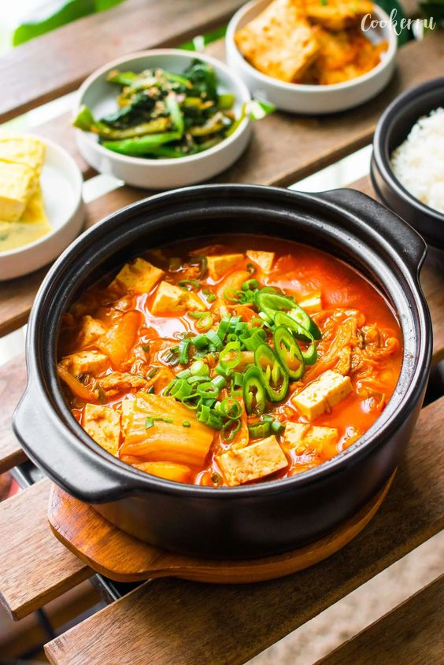

Kimchi jjigae

Description
This Kimchi Jjigae is quick & easy to make, yet loaded with rich and comforting flavors to warm you up on a cold day.
This delicious stew is incredibly savory and calls for a handful of ingredients to make the best kimchi stew
in the comfort of your home.
Ingredients
- Aged kimchi
- Sesame oil
- Sugar
- Onion
- Garlic
- Rice Water
- Canned tuna
- Tofu
- Gochugaru (Korean chili flakes)
- Dashida (Korean soup stock)
- Green Onions
- Chili Pepper
Steps
- Add sesame oil to a pot over medium heat.
Add onion, garlic, kimchi, and sugar, and cook for about 3-4 minutes, stirring often to ensure even cooking.
Add rice water and bring to a boil.
- When the stew starts boiling, add kimchi juice, Gochugaru, and Doenjang (or soy sauce).
Cook for about 8 minutes, or to your desired consistency.
- Add tuna and tofu and cook for another 2 minutes, and season with salt to taste, and add in Dashida if using.
Garnish to your preference and enjoy!